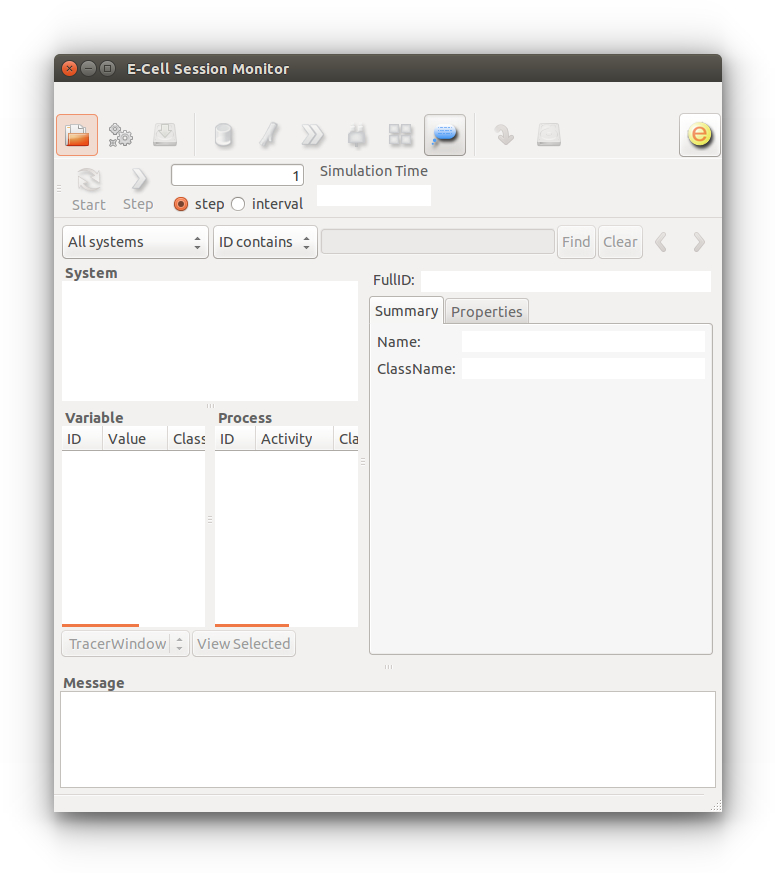

Molecules can diffuse and react in filament (1D), membrane (2D) and cytosolic (3D) compartments.
The effects of intracellular molecular crowding can be studied since each diffusing molecule has spatial dimensions.
Run multi-algorithm simulation with Gillespie next-reaction, mass-action and lattice-based particle reaction-diffusion methods simultaneously.
Build and run models, log and plot data in Python. Simulation speed, however, is uncompromised thanks to C++ core algorithm modules.
Spatiocyte runs stably on Ubuntu Linux, whereas on Mac OS X Yosemite and Windows systems, it is still experimental. On a fresh Ubuntu or a Mac OS X system, Spatiocyte requires several additional packages to run. To install these packages and Spatiocyte, open a terminal and execute the following instructions:
$ wget https://raw.githubusercontent.com/ecell/spatiocyte/master/install-spatiocyte-ubuntu.sh $ sh -x install-spatiocyte-ubuntu.sh
$ curl -O https://raw.githubusercontent.com/ecell/spatiocyte/master/install-spatiocyte-mac.sh $ sh -x install-spatiocyte-mac.sh
Enter your password when requested since some packages require the administrator privilege to install. If you have any issues during install, post the error messages to the Spatiocyte Users forum. On Mac, the installation script will take a longer time to finish executing because more packages need to be downloaded. We can use Blender to render simulation snapshots and VLC to view movies of the snapshots. Since the installation script does not install them on Mac, you can download and install them yourself from http://www.blender.org/ and http://www.videolan.org/ .
USER=root vncserver :1 -geometry 1360x768 -depth 24
Close and reopen the terminal for the installation to take effect. To test if the installation is successful, run the following command in the terminal:
$ ecell3-session-monitor
The above command will open the E-Cell Session Monitor, as shown below. You have now sucessfully installed Spatiocyte! If for some reason, the Session Monitor does not come up, please post the error message to the Spatiocyte Users forum.
Now try running a simple 1D diffusion Python model available in the examples/1D directory:
$ cd $HOME/wrk/spatiocyte/examples/1D $ ecell3-session 1D.py
The simulator will terminate itself once the simulation has ended. To view the simulated molecules, run the Spatiocyte Visualizer by issuing:
$ spatiocyte
More models can be found under the examples directory . To run them, follow the instructions in the README file in the directory.
To build a simple 3D model, open a text editor and add the Python scripts as provided in the code boxes below. Each Spatiocyte model requires the SpatiocyteStepper. It advances the simulation in an event-driven manner. The radius of the hexagonal close-packed lattice voxels can be set in the SpatiocyteStepper using the VoxelRadius property. In the code below, we have set the radius to 4.4 nm.
sim = theSimulator.createStepper('SpatiocyteStepper', 'SS')
sim.VoxelRadius = 4.4e-9
theSimulator.rootSystem.StepperID = 'SS'
The memory usage increases linearly with the number of voxels. In a 64-bit system, each voxel typically takes up 108 bytes of memory. The number of voxels with radius, r in a volume, V is given by V/(4r 3 2 0.5 ). In each compartment, the StepperID must be set to the SpatiocyteStepper ID. Here we only have the root compartment, rootSystem and we set its StepperID to 'SS' which is the SpatiocyteStepper ID given in the first line.
We will use a cuboid compartment geometry for this model. The GEOMETRY variable of a volume compartment specifies one of the six supported geometric primitives: cuboid (‘0’), ellipsoid (‘1’), cylinder (‘2’), rod (‘3’), pyramid (‘4’) and erythrocyte (‘5’). More complex forms can be constructed using a combination of these primitives. Compartments without the GEOMETRY definition is set to the cuboid form since the default value is ‘0’.
theSimulator.createEntity('Variable', 'Variable:/:GEOMETRY').Value = 0
theSimulator.createEntity('Variable', 'Variable:/:LENGTHX').Value = 2.5e-7
theSimulator.createEntity('Variable', 'Variable:/:LENGTHY').Value = 2.5e-7
theSimulator.createEntity('Variable', 'Variable:/:LENGTHZ').Value = 2.5e-7
The three variables LENGTH[X, Y, Z] can specify the compartment lengths in the directions of [x, y, z]-axes, respectively. In the example above, the lengths are set to 250 nm. More information about the LENGTH variable definition can be found in the documentation .
When a volume compartment has the cuboid geometry, as in our example model, the boundary type can be specified using [XY, XZ, YZ]PLANE variables. The boundary type can be reflective (‘0’), periodic (‘1’) or semi-periodic (‘2’). A semi-periodic boundary allows nonHD molecules to move unidirectionally from one boundary to the other. We set all the boundaries to 1 to make them periodic:
theSimulator.createEntity('Variable', 'Variable:/:XYPLANE').Value = 1
theSimulator.createEntity('Variable', 'Variable:/:XZPLANE').Value = 1
theSimulator.createEntity('Variable', 'Variable:/:YZPLANE').Value = 1
Every compartment must have a VACANT variable that represents the 'species' of empty voxels within the compartment. We would like to add the reaction A + B -> C + C in the model, with A and B species each made up of 500 molecules initially. These three variables can be declared as below:
theSimulator.createEntity('Variable', 'Variable:/:VACANT')
theSimulator.createEntity('Variable', 'Variable:/:A').Value = 500
theSimulator.createEntity('Variable', 'Variable:/:B').Value = 500
theSimulator.createEntity('Variable', 'Variable:/:C').Value = 0
We must populate the molecules of A and B species in the compartment before the simulation is started because they initially have non-zero numbers. We populate them using the MoleculePopulateProcess.
populator = theSimulator.createEntity('MoleculePopulateProcess', 'Process:/:pop')
populator.VariableReferenceList = [['_', 'Variable:/:A']]
populator.VariableReferenceList = [['_', 'Variable:/:B']]
We are going to diffuse all three species, A, B and C in the compartment with a diffusion coefficient of 0.1 um 2 /s. We specify the diffusion property of each species with the DiffusionProcess:
diffuser = theSimulator.createEntity('DiffusionProcess', 'Process:/:diffuseA')
diffuser.VariableReferenceList = [['_', 'Variable:/:A']]
diffuser.D = 1e-13
diffuser = theSimulator.createEntity('DiffusionProcess', 'Process:/:diffuseB')
diffuser.VariableReferenceList = [['_', 'Variable:/:B']]
diffuser.D = 1e-13
diffuser = theSimulator.createEntity('DiffusionProcess', 'Process:/:diffuseC')
diffuser.VariableReferenceList = [['_', 'Variable:/:C']]
diffuser.D = 1e-13
Next, we specify the reaction A + B -> C + C using the DiffusionInfluencedReaction process. We set the reaction probability, p to unity, which means a C molecule will be created whenever an A and a B molecule collide.
binder = theSimulator.createEntity('DiffusionInfluencedReactionProcess', 'Process:/:reaction1')
binder.VariableReferenceList = [['_', 'Variable:/:A','-1']]
binder.VariableReferenceList = [['_', 'Variable:/:B','-1']]
binder.VariableReferenceList = [['_', 'Variable:/:C','1']]
binder.VariableReferenceList = [['_', 'Variable:/:C','1']]
binder.p = 1
We can use the VisualizationLogProcess to log the coordinates of the diffusing species at specified intervals or at the shortest stepper intervals (default). The coordinates will be saved in the file VisualLog.dat in binary format. The Spatiocyte Visualizer can load the log file to display the molecules in 3D while the simulation is running or after it has ended.
logger = theSimulator.createEntity('VisualizationLogProcess', 'Process:/:logger')
logger.VariableReferenceList = [['_', 'Variable:/:A']]
logger.VariableReferenceList = [['_', 'Variable:/:B']]
logger.VariableReferenceList = [['_', 'Variable:/:C']]
The coordinates of the molecules can also be saved in csv format with CoordinateLogProcess:
coord = theSimulator.createEntity('CoordinateLogProcess', 'Process:/:coord')
coord.VariableReferenceList = [['_', 'Variable:/:A']]
coord.VariableReferenceList = [['_', 'Variable:/:B']]
coord.VariableReferenceList = [['_', 'Variable:/:C']]
Finally, we need to tell the simulator how long the model should be run. Here, we will run it for 0.08 s.
run(0.08)
Save the file as 3D.py and run the model in a terminal by issuing,
$ ecell3-session 3D.py
We can visualize the simulation with
$ spatiocyte
The above instruction will start the Spatiocyte visualizer, which will load the VisualLog.dat file and display the molecule positions in 3D. The shortcut keys to manipulate the visualizer are provided here. The complete model file can be downloaded here.